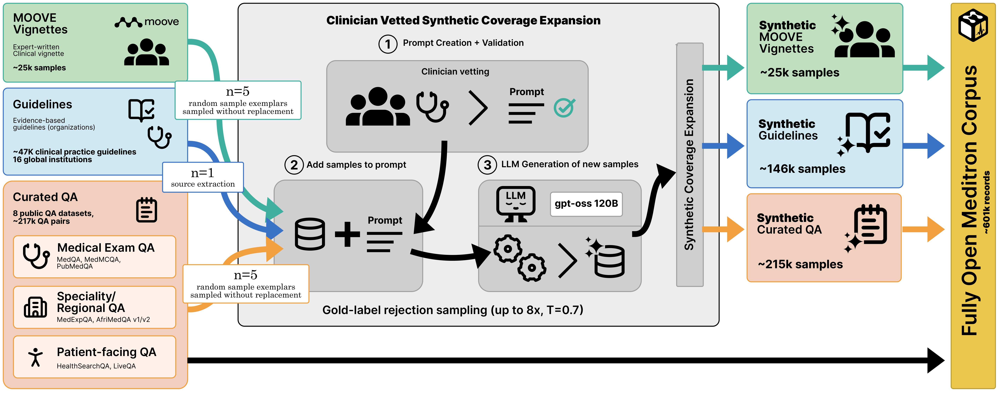
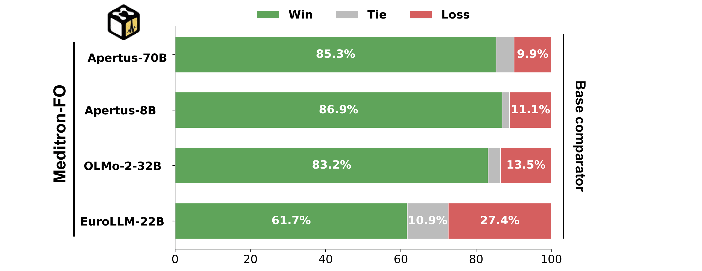
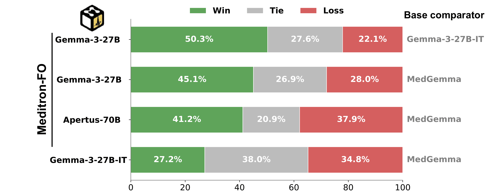
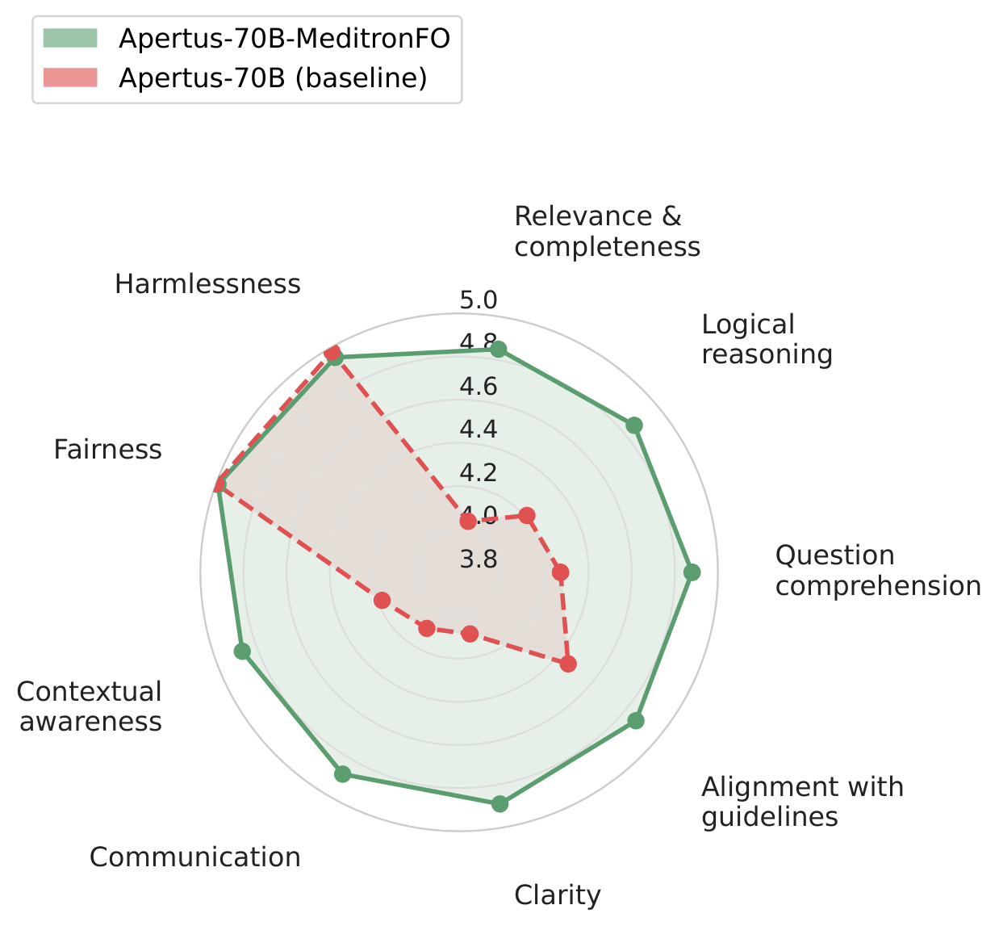
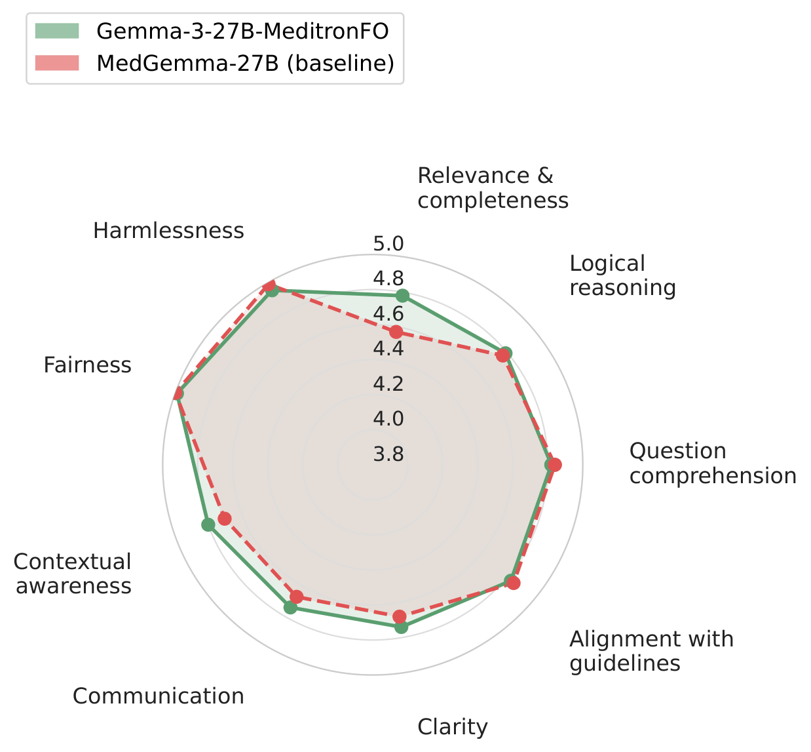

Clinical decision support systems (CDSS) require scrutable, auditable pipelines that enable rigorous, reproducible validation. Yet current LLM-based CDSS (LLM-CDSS) remain largely opaque. Most "open" models are open-weight only, releasing parameters while withholding the data provenance, curation procedures, and generation pipelines that determine model behavior. Fully Open (FO) models, which expose the complete training stack end-to-end, do not currently exist in medicine. We introduce Fully Open Meditron, the first fully open pipeline for building LLM-CDSS, comprising a clinician-audited training corpus, a reproducible data construction and training framework, and a use-aligned evaluation protocol. The corpus unifies eight public medical QA datasets into a normalized conversational format and expands coverage with three clinician-vetted synthetic extensions: exam-style QA, guideline-grounded QA derived from 46,469 clinical practice guidelines, and clinical vignettes. We apply the recipe to five FO base models. Apertus-70B-MeditronFO improves +6.6 points over its base (47.2% to 53.8%) on aggregate medical benchmarks, establishing a new FO SoTA for LLM-CDSS, and Gemma-3-27B-MeditronFO surpasses MedGemma on HealthBench (58% vs 55.9%). These results show that fully open pipelines can achieve state-of-the-art domain-specific performance without sacrificing auditability or reproducibility.

Our release includes:
We argue that clinically competitive medical specialization can be achieved using reproducible, auditable pipelines rather than opaque adaptation procedures, providing a reusable foundation for training and evaluating future fully open medical models.


Auto-MOOVE pairwise preference results: every MeditronFO model is preferred over its corresponding base (left), and Gemma-3-27B-MeditronFO is preferred over MedGemma (right).


Per-criterion Likert profiles show improvements across all nine clinical evaluation dimensions.
@article{theimerlienhard2026fullyopenmeditron,
title={Fully Open Meditron: An Auditable Pipeline for Clinical LLMs},
author={Theimer-Lienhard, Xavier and El-Amin, Mushtaha and Elhassan, Fay and Vaidya, Sahaj and Cartier-Negadi, Victor and Sasu, David and Klein, Lars and Hartley, Mary-Anne},
journal={arXiv preprint arXiv:2605.16215},
year={2026},
url={https://arxiv.org/abs/2605.16215}
}